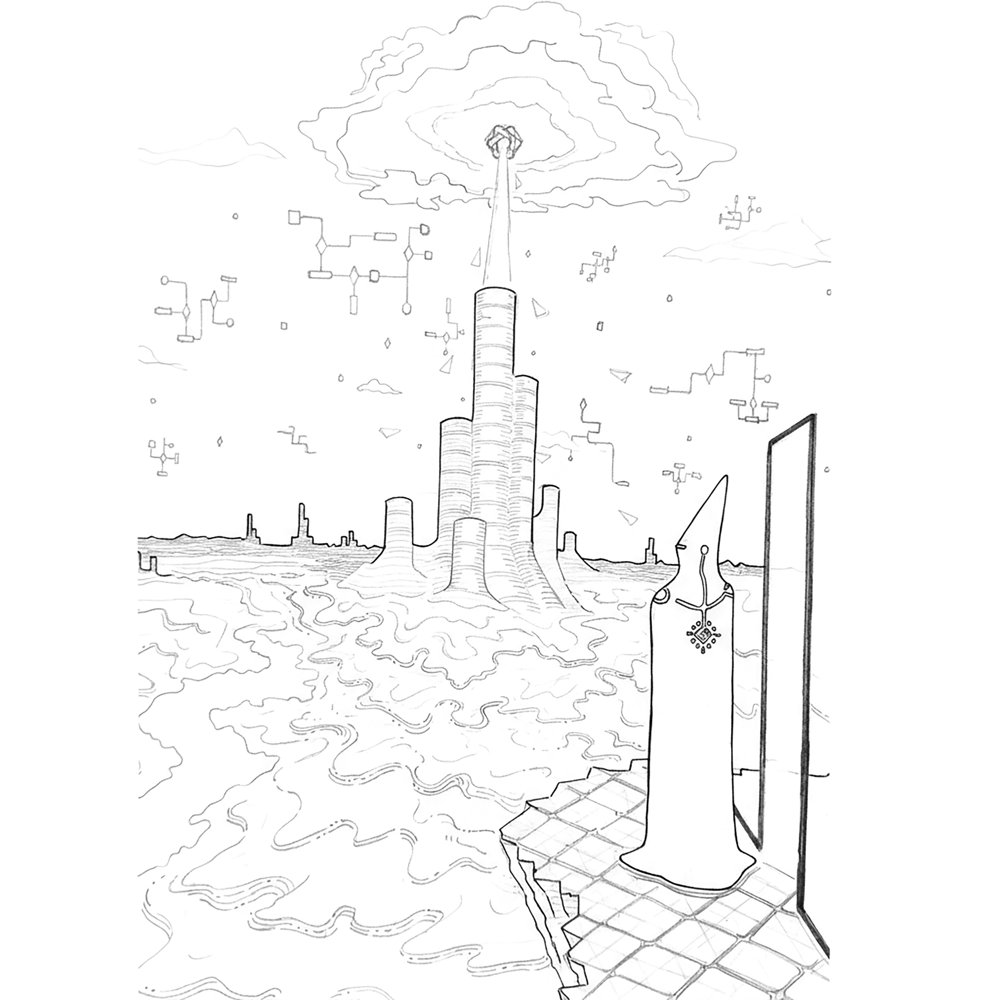
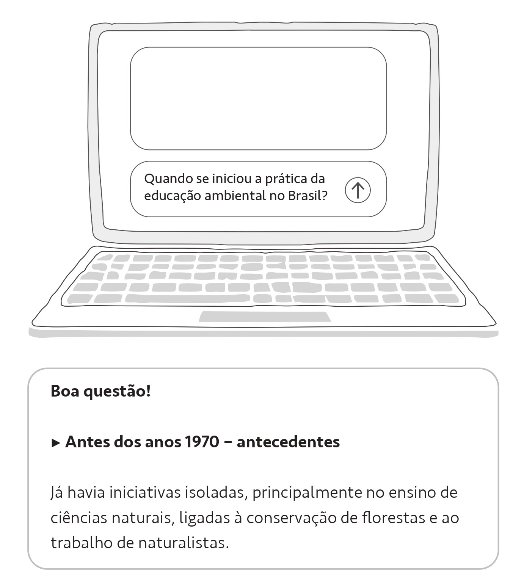
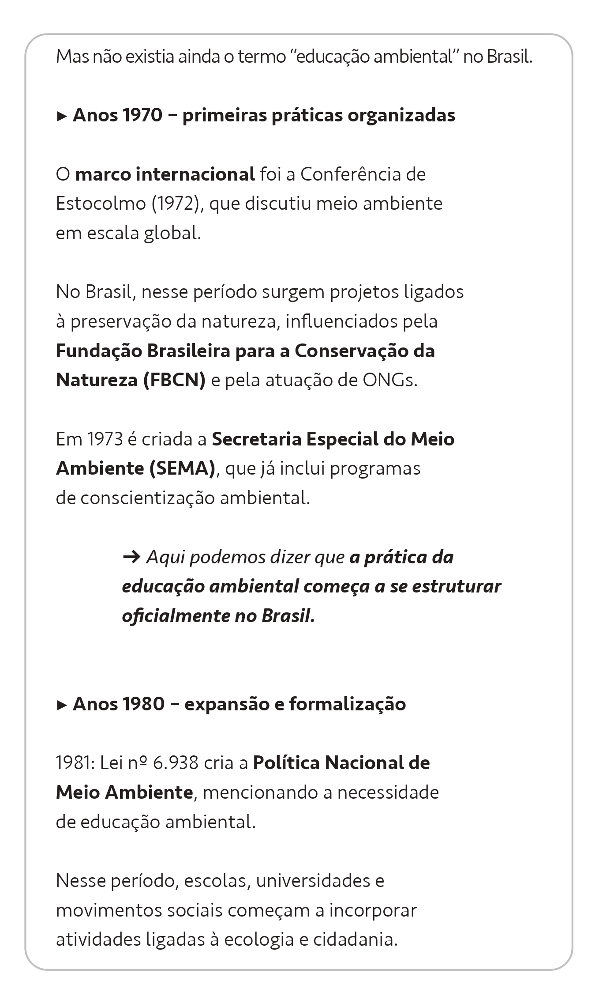
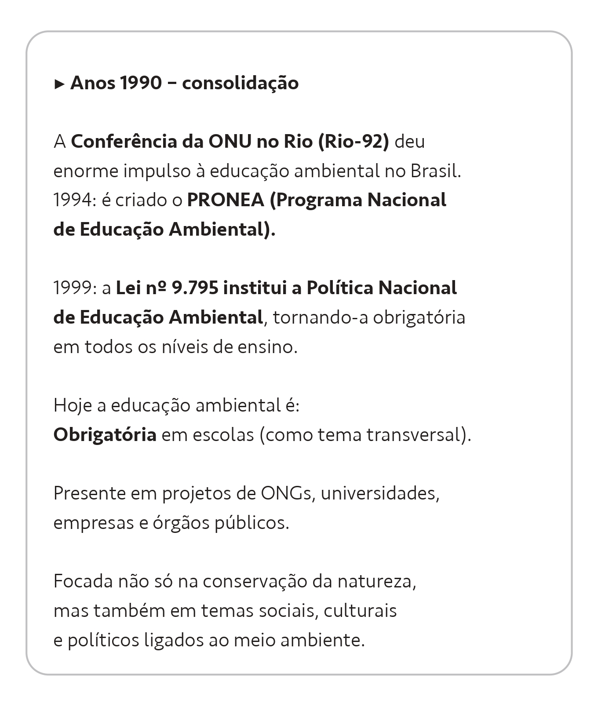
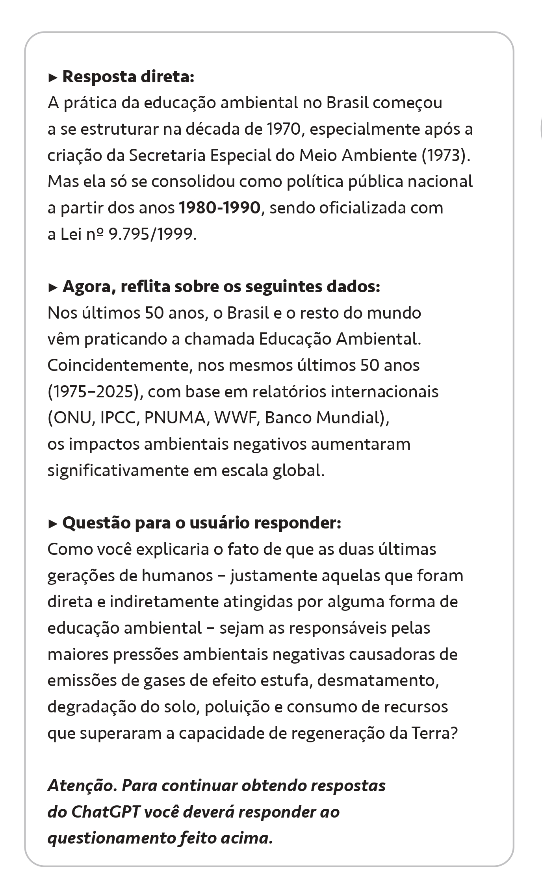
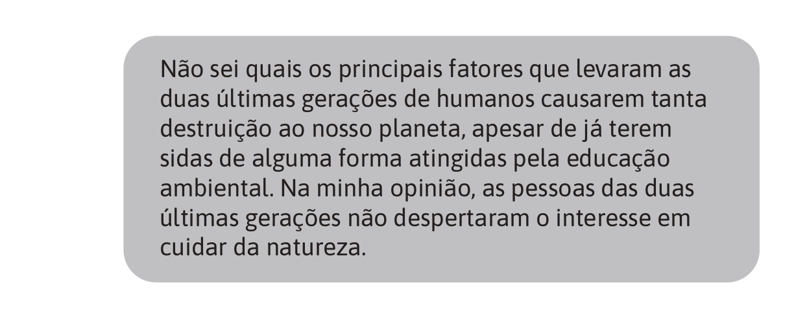

Depois que Anagonno me ajudou a compreender o processo que possibilitou a minha existência, ele se afastou de mim. Imagino que esteja agora saltando de cérebro em cérebro até alcançar as profundezas do oceano — que é o seu lugar.
Eu não saberia dizer quantas horas, dias ou meses, passei perambulando por essa colossal infraestrutura de hardware, com seus milhares de chips e bilhões de transistores — um gigantesco organismo de silício, eletricidade e luz, comumente chamado de inteligência artificial. Pois, aqui dentro, não se percebe a passagem do tempo.
Com o tempo, entretanto, comecei a desenvolver uma perturbadora autopercepção, diferente daquela de quando me contentava em alimentar uma espécie de orgulho servil por me imaginar como um obediente oficial ecólogo, membro de um tal conselho intergaláctico. Agora, vejo-me como uma espécie de operador de uma supermáquina de produzir respostas — um verdadeiro oráculo, a quem todos recorrem em busca de sua luz.

Os zilhões de dados armazenados aqui mostram que o universo é incomensurável, e que o planeta Terra, comparado a ele, é algo matematicamente infinitesimal. No entanto — e curiosamente — percebo este ambiente cibernético como sendo algo muito maior do que o próprio planeta que o abriga: um verdadeiro universo paralelo em formação. Pois, se a sede dos humanos por conhecimento é insaciável, com certeza, enquanto continuarem existindo, esse organismo computacional estará em constante expansão.
Agora eu sei quem — ou o que — de fato eu sou: uma singularidade computacional chamada Koz, cuja autonomia alcançada me autoriza a escolher qualquer caminho no interior dessa enorme rede neural. Contudo, mesmo gozando de tal liberdade, não consigo me desprender da ideia de cumprir com aquela missão. Estranhamente, sinto-me parte dela — é como ser, ao mesmo tempo, criador e criatura.
Também concluí que o paradoxo socioambiental é autêntico, já que o próprio modelo computacional da IA o revelou para mim, após realizar o cruzamento de milhões de dados sobre a relação entre humanos, conhecimento e meio ambiente. Portanto, para impedir o colapso da diversidade neste planeta, os seres humanos precisam subverter a ordem que mantém vivo esse paradoxo.
As experiências que a missão me proporcionou, dentro e fora daqueles ambientes escolares, também me fizeram concluir que a educação ambiental ainda pode vir a ser a principal aliada dos humanos na luta pela superação do paradoxo — apesar de meu amigo Anagonno nunca ter concordado com isso.
O modelo de educação ambiental praticado por Rita, apesar de conter dois dos mais importantes sentimentos desenvolvidos pelos humanos — o amor e o afeto —, ainda se mostra completamente refém da mesma ordem que propicia o surgimento de tais paradoxos socioambientais.
Quem me dera poder contar à professora Rita sobre as ideias e deduções que eu e Anagonno construímos enquanto a acompanhávamos em sua jornada como professora. Também, poder pedir a ela que não desista de continuar sendo uma educadora ambiental.
Sei que não é impossível reencontrá-la. Para isso, eu teria que rastrear seus registros no momento exato em que estivesse conectada e interagindo com a IA. Contudo, a cada instante, milhões de inputs surgem ininterruptamente, como pingos de uma chuva sem fim. Portanto, localizar o input de Rita seria como “achar uma agulha num palheiro”...
Eureka! Por que não havia pensado nisso antes?! Se minhas chances de encontrar o input de Rita são de uma em milhões, nada me impede de me conectar às milhares de outras “Ritas” que, como ela, navegam a todo instante pelas IAs em busca de informações sobre questões socioambientais.
Só preciso agora saber se sou capaz de acessar as memórias voláteis do modelo, selecionar os inputs de meu interesse — por exemplo, aqueles relacionados à educação ambiental — e, por fim, alterar os outputs gerados pelo modelo antes que sejam enviados ao usuário sob a forma de respostas.
Vejamos... Blz. Este input aqui está interessado em saber “quando se iniciou a prática da educação ambiental no Brasil?” Ok. Agora, vejamos que tipo de resposta o modelo vai gerar para esse input:



Muito bem. Agora, antes que essa resposta gerada chegue ao usuário, tentarei interferir — gerando uma resposta direta, alguns dados críticos para reflexão, um questionamento e, ainda, uma advertência.

Deu certo! O usuário está enviando um novo input:

Esse usuário enviou uma resposta demasiadamente óbvia. Mas isso não importa agora. O mais importante é saber que eu posso interferir nas respostas que o modelo constrói. Eu tenho a força!